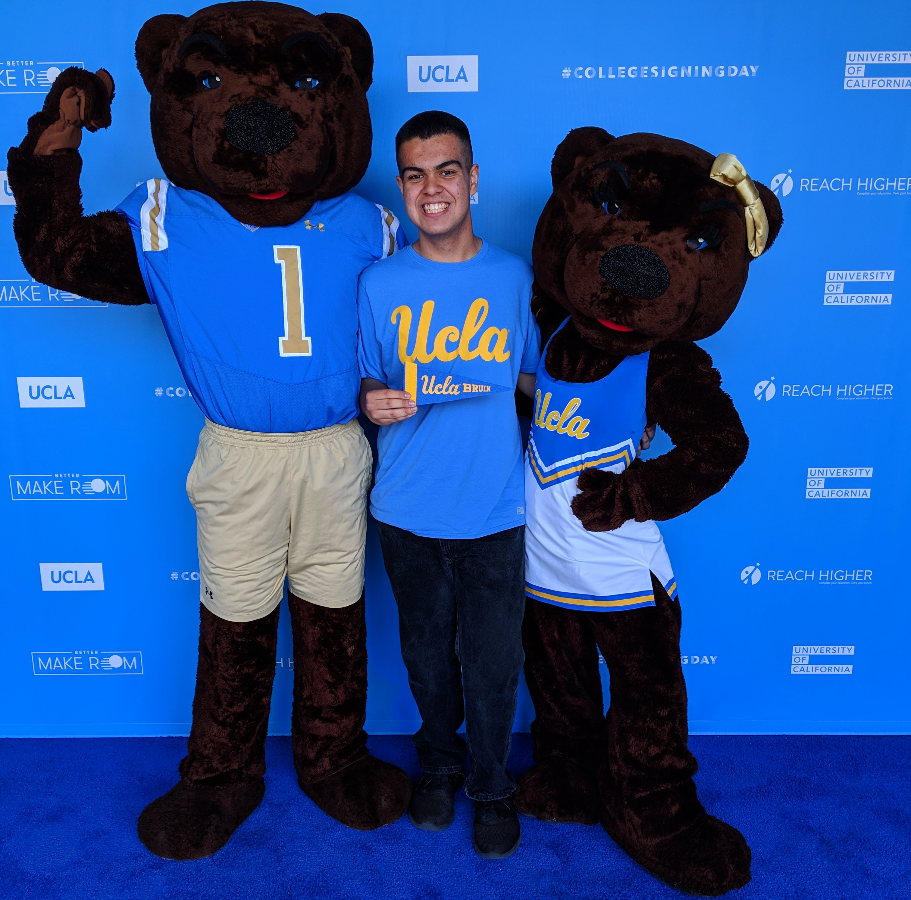

About
Hello there! My name is Matthew. I was born and raised in Southern California, and have stayed local for college as I’m now going into my fourth year as a computer science major at UCLA. Last summer, I interned remotely for Facebook and gained experience with iOS development. I’m excited to join Twitter this summer in the San Francisco office alongside other interns!
In my free time, I enjoy keeping up with the news (especially in tech), listening to music, exploring the city I'm in, discovering new places to eat, and hanging out with my friends. Happy to connect to discuss my experience or any opportunities in software engineering!
